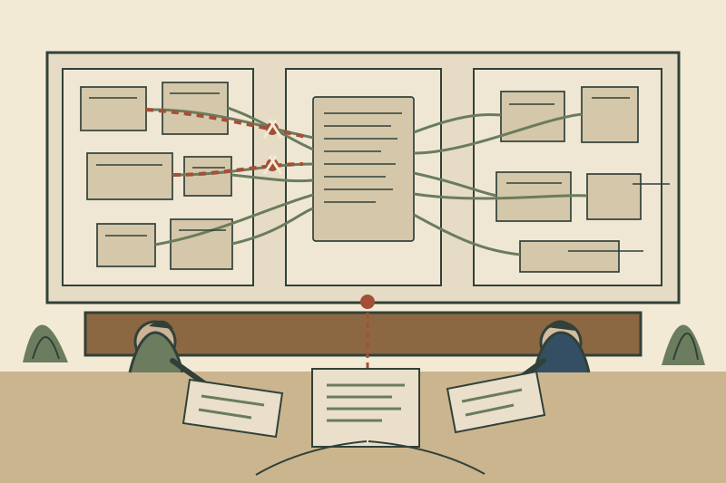

要求の「その後」だけ追っても足りない——仕様になる前の由来を残すRequirements Traceability
An Analysis of the Requirements Traceability Problem

要求トレーサビリティというと、「要求ID R-17が、どの設計・コード・テストへ実装されたか」を結ぶ表を思い浮かべやすい。GotelとFinkelsteinは1994年、この見方では問題の半分しか扱えていないと指摘した。仕様書に載った要求が後でどこへ行ったかだけでなく、その要求が誰の、どの発言・判断・交渉から、なぜその形で仕様書に入ったかも追えなければならない。彼らは前者をpost-RS、後者をpre-RS traceabilityと分けた。
なぜ「要求ID→実装」だけでは復元できないのか
仕様書は要求工学の終点に見える。しかし実際には、その一行へ至るまでに、複数の利害関係者の発言、会議、仮説、却下案、用語の調整、例外条件、担当者の判断がある。最終仕様書はその過程を圧縮した成果物だ。
post-RS traceabilityは、その圧縮後のbaselineから先を追う。要求がどの設計成果物、実装、テスト、運用へ対応するかを見る。これは変更影響分析や検証に必要である。だが「なぜこの要求になったのか」「この条件を決めた人は誰か」「要件を変えるなら誰へ聞くべきか」という問いは、baselineより前の記録がなければ答えられない。
pre-RSとpost-RSは、扱う情報が違う
論文が強いのは、traceabilityを単なる「リンクを増やす問題」としなかった点にある。post-RSでは、比較的安定したrequirements specificationを基準に、後続artifactへのforward/backward linkを保つ。一方pre-RSでは、要求がまだ作られている途中の、流動的で異質な情報を扱う。
発言は書き換わる。複数人の話が一つの要求へ統合される。逆に一つの要求が複数へ分解される。誰が関わったかも重要になる。したがって、最終仕様の項目と同じ固定schemaを、その前段へそのまま押し付ければよいわけではない。
要求がrequirements specificationへ入るまでの生成・交渉・精緻化・修正を、その起源へさかのぼれること。
仕様書へ入った要求が、設計・実装・テスト・運用へどう展開されたかを追えること。
論文はtraceabilityを、要求の起源から精緻化、仕様化、配備、利用、再修正まで前後に追える能力として定義し直す。
100人超の実務家を調べると、問題は仕様書より前に集中した
この論文は概念提案だけではない。著者らは1年以上にわたり100人を超えるpractitionerを対象に、文献・100以上のtool review、5回のfocus group、2段階questionnaire、follow-up interview、RAD workshop等の観察・参加を組み合わせた。実務経験も9か月から30年まで幅がある。
そこで、poor traceabilityとして語られる問題の多くが、pre-RSの不足に由来すると報告した。仕様書から後ろのリンクを整備するtoolは既に多かったが、要求がどこから来て、誰がどう関与し、なぜその形になったかの支援は弱かった。
特に頻繁に挙げられたのが、要求のsourceやpre-RS workを「どこにあるか分からない、アクセスできない」という問題だった。論文後半では、最も有用なpre-RS情報として、要求のultimate sourceと、その要求が仕様へ入って精緻化されるまでに関与した人々が挙がったと報告している。
記録すれば解決、でもない
ここで単純に「会議を全部保存しよう」とすると別の問題が出る。記録を作る人は、その記録が将来どの問いに使われるかを予測できない。利用者は必要になった時点で初めて、「この決定の背景が欲しい」「この例外を入れた人へ聞きたい」と分かる。記録コストを負う側と、後から利益を受ける側がずれる。
著者らはこれをproviderとend-userのconflictとして整理する。pre-RS traceabilityは追加作業と見なされやすく、時間や担当が割かれにくい。しかも情報量と種類を事前に完全には決められない。文書化しても更新されなければtraceableではない。情報を増やすだけでは、必要な時に探せる状態にはならない。
この指摘は現在のSlack、Notion、議事録、AIログにもそのまま残る。保存容量が増えても、source・decision・rationale・participantの関係が検索可能になっていなければ、履歴は「あるが使えない」。
面白いのは、「人」もtraceの一部だと見ていること
1994年の論文なのに、最終的に人間同士のcontactを外せない点まで踏み込む。要求の由来をすべて形式情報へ変換するのは難しい。適切な記録があっても、当事者とのface-to-face communicationを補助できることが有用だったという調査結果を示す。
つまりtraceabilityの対象はdocument-to-document linkだけではない。誰がその知識を持っていたか、誰が決定へ関与したか、現在その人へアクセスできるかも含まれる。後任が過去の設計判断を再構成するとき、最短経路が「文書を30件読む」ではなく「この人へ聞く」ことは普通にある。
現在の要求設計へ持ち込むなら、「決定前」を成果物にする
実務で全部を完全traceするのは重い。そこで重要な要求だけでも、最終文言の横に「source」「decision」「reason」「rejected alternative」「open issue」「involved person」を残すと、pre-RSをかなり回収できる。特に、仕様の境界を決めた判断、例外を捨てた判断、評価基準へ変換した判断は、後で結論が揺れやすい。
AIを使う場合はさらに面白い。会議ログやSlackを丸ごとRAGへ入れるだけでは、要求の由来が自動的にtraceableになるわけではない。最終仕様の各statementから、その根拠発言・決定ログ・関与者へ戻れるlinkを作る必要がある。RAGは到達手段で、traceabilityは関係構造の設計である。
既存記事とのつながり
Inquiry-Based Requirements Analysisは、質問・回答・仮定・scenarioを要求へ結び、要求が固まる途中を構造化する。今回のtraceability論文は、その「途中」を後から追える状態にする必要を実証側から示す。A Rational Design Processが、実際の迷走を後から理解できる文書へ再構成する話だとすれば、こちらは再構成するときに元のsourceへ戻れることを要求する。
Programming as Theory Buildingとも接続する。Naurが「文書だけでは設計者のtheoryを完全に移せない」と言うなら、pre-RS traceabilityは少なくとも、そのtheoryを再構成するための痕跡と人への経路を残そうとする試みと読める。
限界
調査は1990年代前半のsoftware development環境で行われ、toolや通信手段は現在と大きく違う。また、論文自身もpre-RS traceabilityへ包括的な解法を出してはいない。むしろ、固定的な分類と大量記録だけでは扱えない複合問題だと結論づける。その未解決性が、この論文を今読んでも古くしない。
考えるための問い
手元の仕様書で、一番重要な一文を一つ選ぶ。その文を「誰が、どの出来事を根拠に、どの代替案を捨てて決めたか」まで10分以内に戻れるだろうか。戻れないなら、失われているのは仕様ではなく、仕様が生まれた過程である。